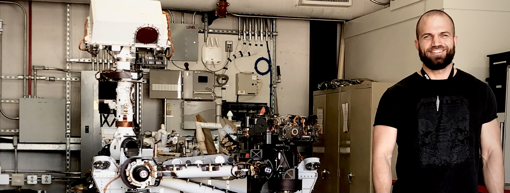

Marlin P. Strub
Robotics Technologist at NASA/JPL

| NEWS | ABOUT | PUBLICATIONS |
News
Click the list items to show/hide details.
- Jul 2023 Our EELS paper was accepted at IROS.
The Exobiology Extant Life Surveyor (EELS) team wrote a paper that control and planning algorithms for EELS. One of the core ideas of the paper is to decouple shape control from motion control for screw-based gaits. The control strategy that gets EELS into a desired shape is distinct from the control strategy that propels EELS forward.
- Oct 2022 I'm now a Robotics Technologist at NASA/JPL.
I was promoted to Robotics Technologist at JPL. Fortunately my responsibilities stay the same, so I still get to do hands-on robotics work on the Exobiology Extant Life Surveyor (EELS) and the Sample Recovery Helicopters (SRH) ground mobility effort.
- Aug 2022 Wil's TMIT* paper was published at RA-L.
I coauthored a paper with Wil and Jon that presents Task and Motion Informed Trees (TMIT*), an integrated task and motion planning algorithm. TMIT* combines AIT* with PLANET to improve performance when high-level tasks, such as sorting potentially stacked objects, require reasoning about the order in which path-planning problems are to be executed.
- Jan 2022 I started as a postdoc at NASA/JPL.
I accepted a position as a postdoctoral researcher at NASA/JPL. I'm part of the autonomy team for a snake-like robot called EELS that is being built to explore alien worlds. My work focuses on coming up with path planning and control approaches for EELS and includes contributing to the corresponding modules in its C++ autonomy stack.
- Jan 2022 I passed my viva at the University of Oxford!
I passed my viva (Ph.D. defense) at the University of Oxford. There are umpteen people to thank. Here I just want to thank Jon for letting me stand on his shoulders these past three years and Nick and Wheeler for their time and constructive criticism. It is sincerely appreciated!
- Nov 2021 The journal paper on AIT* & EIT* was accepted at IJRR.
My first journal paper got accepted at IJRR. AIT* and EIT* improve planning performance by leveraging multiple sources of information with an asymmetric bidirectional search. The paper will be published in 2022 but you can already find a preprint on arxiv and a high-level presentation of it on youtube.
- Apr 2021 I wrote about heuristics for obstacle clearance.
Obstacle clearance in search space is an important optimization objective in path planning because it can result in safe paths. This technical report presents admissible heuristics that can improve planning performance when optimizing this objective. You can find the report on arxiv.
- Sep 2020 Jon's survey was accepted at ARCRAS.
I assisted Jon in surveying the field of asymptotically optimal sampling-based path planning algorithms for an invited paper in the Annual Review of Controls, Robotics, and Autonomous Systems. The paper will be published in 2021, but you can find a preprint of it on arxiv.
- Aug 2020 Mike's paper was accepted at IROS.
I coauthored a paper that presents the autonomy system used on Axel during the field trial last summer. The autonomy system includes a stability analysis that predicts the interaction of Axel's tether with the terrain. My main contribution was to describe how we adapted ABIT* to work with Axel's tether-induced non-Markovian states. You can find an open-access version of it on the ESP website.
- Feb 2020 Adaptively Informed Trees (AIT*) was accepted at ICRA.
My second paper got accepted at ICRA. AIT* improves planning performance with an asymmetric bidirectional search in which both searches continuously inform each other with complementary information. You can find the AIT* paper on arxiv and a high-level presentation of it on youtube.
- Feb 2020 Advanced BIT* (ABIT*) was accepted at ICRA.
My first paper got accepted at ICRA. ABIT* leverages advanced graph-search techniques, such as inflation and truncation, in sampling-based path planning. This is the algorithm we tested last summer. You can find the ABIT* paper on arxiv a high-level presentation of it on youtube.
- Jul 2019 We went on a NASA/JPL field trial in California.
Jon and I had the chance to join the NASA Jet Propulsion Laboratory (JPL) on a field trial for Axel in the Mojave Desert. We tested new path planning techniques and supported the team at JPL in running science and autonomy experiments.
- Sep 2018 I started my Ph.D. at the University of Oxford.
I've joined Jon's Estimation, Search, and Planning Group at the Oxford Robotics Institute to work on path planning for complex systems.
- Jan 2018 We rowed across the Atlantic!
Swiss Mocean got third place in the 2017 Talisker Whisky Atlantic Challenge and became the first Swiss fours to row any ocean. It took us 30 days, 4 hours, and 59 minutes to row from the Canaries to the Caribbean Islands. If your IP is from Switzerland, you can watch a professionally produced documentary about the project here. It's in Swiss German, but there's also a version of it with English subtitles on youtube.
About

I'm a Robotics Technologist at NASA/JPL, where I currently lead the path-planning efforts for a snake-like robot called Exobiology Extant Life Surveyor (EELS) and for the Sample Recovery Helicopters (SRH) ground mobility control. I hold a PhD in Engineering Science from the University of Oxford, where I was a member of the Estimation, Search, and Planning (ESP) Group led by Dr. Jonathan D. Gammell. My research at Oxford focused on designing and implementing path-planning algorithms that leverage different sources of information to improve planning performance for complex systems in robotics and beyond. I also hold an MSc in Robotics, Systems, and Control and a BSc in Mechanical Engineering from ETH Zürich. If you're interested in my work, please take a look at my publications. All of the algorithms I designed at ESP are publicly available in the Open Motion Planning Library (OMPL) under a BSD license.
A detailed CV can be downloaded by clicking on this link.
Publications
Journal articles
W. Thomason, M. P. Strub, J. D. Gammell (2022) Task and Motion Informed Trees (TMIT*): Almost-surely asymptotically optimal integrated task and motion planning. Robotics and Automation Letters (RA-L), 7(4): pages 11370—11377. (arxiv, doi)
Bibtex entry
@Article{thomason_ral22,
author = {Thomason, Wil and Strub, Marlin P. and Gammell, Jonathan D.},
title = {{Task} and {Motion} {Informed} {Trees} ({TMIT*}): Almost-surely asymptotically optimal integrated task and motion planning},
journal = {{IEEE} Robotics and Automation Letters ({RA-L})},
year = {2022},
volume = {7},
number = {4},
pages = {11370--11377},
doi = {10.1109/LRA.2022.3199676}
}
M. P. Strub, J. D. Gammell (2022) AIT* and EIT*: Asymmetric bidirectional sampling-based path planning. The International Journal of Robotics Research (IJRR), 41(4): pages 390—417. (arxiv, doi)
Bibtex entry
@Article{strub_ijrr2021,
author = {Strub, Marlin P. and Gammell, Jonathan D.}
title = {{AIT*} and {EIT*}: {Asymmetric} bidirectional sampling-based path planning},
journal = {The International Journal of Robotics Research ({IJRR})},
year = {2022},
volume = {41},
number = {4},
pages = {351--457},
doi = {10.1177/02783649211069572}
}
J. D. Gammell, M. P. Strub (2021) Asymptotically optimal sampling-based motion planning methods. Annual Review of Control, Robotics, and Autonomous Systems (ARCRA), 4(1): pages 295—318. Invited. (arxiv, annualreviews)
Bibtex entry
@Article{gammell_arcras2021,
author = {Gammell, Jonathan D. and Strub, Marlin P.},
title = {Asymptotically optimal sampling-based motion planning methods},
journal = {Annual Review of Control, Robotics, and Autonomous Systems},
year = {2021},
volume = {4},
number = {1},
pages = {295--318},
doi = {10.1146/annurev-control-061920-093753}
}
Conference papers
V. N. Hartmann, M. P. Strub, M. Toussaint, J. D. Gammell (2022) Effort Informed Roadmaps (EIRM*): Efficient asymptotically optimal multiquery planning by actively reusing validation effort. In: Proceedings of the International Symposium on Robotics Research (ISRR). (arxiv)
Bibtex entry
@InProceedings{hartmann_arxiv22,
author = {Hartmann, Valentin N. and Strub, Marlin P. and Toussaint, Marc and Gammell, Jonathan D.},
title = {{Effort} {Informed} {Roadmaps} ({EIRM*}): {Efficient} asymptotically optimal multiquery planning by actively reusing validation effort},
booktitle = {Proceedings of the International Symposium on Robotics Research ({ISRR})},
year = {2022},
doi = {10.1007/978-3-031-25555-7_37}
}
M. Paton, M. P. Strub, T. Brown, R. J. Greene, J. Lizewski, V. Patel, J. D. Gammell, I. A. D. Nesnas (2020) Navigation on the line: Traversability analysis and path planning for extreme-terrain rappelling rovers. In: Proceedings of the IEEE/RSJ International Conference on Intelligent Robots and Systems (IROS). pages 7034—7041. (open-access, ieeexplore)
Bibtex entry
@InProceedings{paton_iros2020,
author = {Paton, Michael and Strub, Marlin P. and Brown, Travis and Greene, Rebecca J. and Lizewski, Jacob and Patel, Vandan and Gammell, Jonathan D. and Nesnas, Issa A.D.},
title = {Navigation on the line: {Traversability} analysis and path planning for extreme-terrain rappelling rovers},
booktitle = {Proceedings of the {IEEE}/{RSJ} International Conference on Intelligent Robots and Systems ({IROS})},
year = {2020},
pages = {7034--7041},
doi = {10.1109/IROS45743.2020.9341409}
}
M. P. Strub, J. D. Gammell (2020) Adaptively Informed Trees (AIT*): Fast asymptotically optimal path planning through adaptive heuristics. In: Proceedings of the IEEE International Conference on Robotics and Automation (ICRA). pages 3191—3198. (arxiv, ieeexplore)
Bibtex entry
@InProceedings{strub_icra2020b,
author = {Strub, Marlin P. and Gammell, Jonathan D.},
title = {{Adaptively} {Informed} {Trees} ({AIT*}): {Fast} asymptotically optimal path planning through adaptive heuristics},
booktitle = {Proceedings of the {IEEE} International Conference on Robotics and Automation ({ICRA})},
year = {2020},
pages = {3191--3198},
doi = {10.1109/ICRA40945.2020.9197338}
}
M. P. Strub, J. D. Gammell (2020) Advanced BIT* (ABIT*): Sampling-based planning with advanced graph-search techniques. In: Proceedings of the IEEE International Conference on Robotics and Automation (ICRA). pages 130—136. (arxiv, ieeexplore)
Bibtex entry
@InProceedings{strub_icra2020a,
author = {Strub, Marlin P. and Gammell, Jonathan D.},
title = {{Advanced} {BIT*} ({ABIT*}): {Sampling}-based planning with advanced graph-search techniques},
booktitle = {Proceedings of the {IEEE} International Conference on Robotics and Automation ({ICRA})},
year = 2020,
pages = {130--136},
doi = {10.1109/ICRA40945.2020.9196580},
}
Theses
M. P. Strub (2022) Leveraging multiple sources of information to search continuous spaces. Ph.D. Thesis, University of Oxford (Oxford University Research Archive)
Bibtex entry
@PhDThesis{strub_phd2022,
author = {Strub, Marlin P.},
title = {Leveraging multiple sources of information to search continuous spaces},
school = {University of Oxford},
year = {2022}
}
Workshop papers and technical reports
J. D. Gammell, M. P. Strub, V. N. Hartmann (2022) Planner Developer Tools (PDT): Reproducible experiments and statistical analysis for developing and testing motion planners. In: Proceedings of the Workshop on Evaluating Motion Planning Performance (EMPP), IEEE/RSJ International Conference on Intelligent Robots and Systems (IROS). (open-access)
Bibtex entry
@InProceedings{gammell_empp22,
author = {Gammell, Jonathan D. and Strub, Marlin P. and Hartmann, Valentin N.},
title = {Planner {Developer} {Tools} ({PDT}): Reproducible experiments and statistical analysis for developing and testing motion planners},
booktitle = {Proceedings of the Workshop on Evaluating Motion Planning Performance ({EMPP}), {IEEE/RSJ} International Conference on Intelligent Robots and Systems ({IROS})},
year = {2022}
}
M. P. Strub, J. D. Gammell (2021) Admissible heuristics for obstacle clearance optimization objectives. (arxiv)
Bibtex entry
@TechReport{strub_tr2021,
author = {Strub, Marlin P. and Gammell, Jonathan D.},
title = {Admissible heuristics for obstacle clearance optimization objectives},
institution = {Estimation, Search, and Planning (ESP) Research Group, University of Oxford},
number = {TR-2021-MPS001},
note = {arXiv:2104.02298 [cs.RO]},
year = {2021}
}